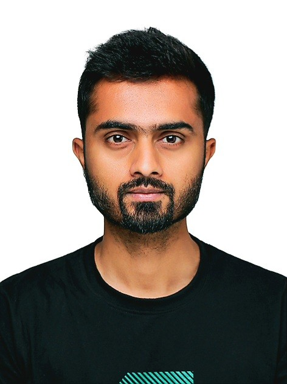

CIKM ’26
01 / 09
RESEARCHER / ENGINEER / BUILDER
Muhammad
Shahid Muneer.
Human curiosity.
Artificial intelligence.
I build the science and systems that distinguish real media from synthetic. Deepfake detection, multimodal learning, and generative AI that earns our trust.
SPhD researcher · Sungkyunkwan UniversitySuwon, South Korea · Secure Machines Lab
Scroll to look beneath the surfacePORTRAIT → GEOMETRY → SIGNAL↓

A HUMAN BEHIND THE ALGORITHMSM / 001
MY DIGITAL PORTRAIT
+LOOK BENEATH THE SURFACEThe person.
MOVE TO EXPLORE · SCROLL TO TRANSFORM
BEYOND APPEARANCE
Every system I build starts with a human question.
09↗
Peer-reviewed papers
04↗
First-author papers
03★
International challenge podiums
4.37/ 4.50
Doctoral GPA · SKKU
01 / RESEARCH DIRECTIONS
Understanding the synthetic.
Five connected directions.
One goal: AI we can trust.
FREQUENCY FORENSICS / CONCEPTUAL VIEW
RESEARCH CONCEPT VISUALIZATION 01 / 05
01 / FREQUENCY FORENSICS
Generated images leave a fingerprint in the frequency domain.
GAN upsampling stamps a periodic lattice into the spectrum; diffusion models leave a mid-band ring instead. UGAD reads those fingerprints to detect generated imagery from any model it has never seen, and AEON uses the same physics in reverse — hiding watermark energy where the eye cannot follow it.
- UGAD — Universal Generative AI Detector using frequency fingerprints, CIKM 2024
- AEON — Adaptive Embedding Optimized Noise for robust diffusion watermarking, WACV 2026
- 2nd place, SAFE Image Edit Detection & Localization Challenge, WACV 2026
02 / MULTI-AGENT VERIFICATION
One model cannot verify a news story. A swarm can.
MOSAIV orchestrates a swarm of specialised LLM agents — retrieval, provenance, visual forensics, cross-source reconciliation — that argue toward a verdict on multimedia news items. Each node here is an agent; each pulse is a message passing between them.
- MOSAIV — Multi-Agent LLM Swarms for Automated Multimedia News Verification, ICMR 2026
- 3rd place, Grand Challenge on Multimedia Verification (MV2026), ICMR 2026
- LangChain orchestration, LoRA fine-tuning, tool-use routing across vision models
03 / AUDIO-VISUAL DETECTION
A fake talking head betrays itself between the lips and the audio.
Instead of masking pixels, we learn representations anchored on facial landmarks and distil them into a compact student model — so audio-visual inconsistency, not texture, drives the decision.
- Beyond Masking — landmark representation learning & knowledge distillation, CIKM 2025
- ICR-NET — robust deepfake detection under temporal corruption, PAKDD 2026
- Live-streaming deepfake detection — ongoing, low-latency inference on live video
04 / ROBUST WATERMARKING
A watermark is only useful if it survives the internet.
AEON optimises where noise is embedded in a diffusion model's latent so the mark holds through compression, cropping and re-generation.
- AEON — Adaptive Embedding Optimized Noise, IEEE/CVF WACV 2026
- Deepfake attack prevention using steganographic GANs, PeerJ CS 2022
- MS thesis — deepfake prevention for video via deep learning + encryption
05 / GENERATIVE AI SAFETY
A million-scale dataset, and a boundary you can actually tune.
Text-to-image models on the open web need an NSFW defense that is multimodal and robust to prompt evasion. I built the million-scale dataset and the defense around it — the cloud here is the embedding space, the sphere represents the decision boundary.
- Towards Safe Synthetic Image Generation on the Web, WWW Companion 2025
- Million-scale multimodal NSFW dataset + robust defense pipeline
- Panoptic deepfake localization across diverse manipulation classes — ongoing
02 / SELECTED PUBLICATIONS
Ideas, tested and published.
ICMR ’26
02 / 09
MOSAIV: Multi-Agent LLM Swarms for Automated Multimedia News Verification
WACV ’26
03 / 09
AEON: Adaptive Embedding Optimized Noise for Robust Watermarking in Diffusion Models
PAKDD ’26
04 / 09
ICR-NET: Robust Deepfake Detection under Temporal Corruption
Co-author
WDC ’26
05 / 09
Analyzing Commercial Deepfake Detectors on Real-World Cases
Co-author
CIKM ’25
06 / 09
Beyond Masking: Landmark-based Representation Learning and Knowledge Distillation for Audio-Visual Deepfake Detection
Co-author
WWW ’25
07 / 09
Towards Safe Synthetic Image Generation on the Web: A Multimodal Robust NSFW Defense and Million-Scale Dataset
CIKM ’24
08 / 09
UGAD: Universal Generative AI Detector utilizing Frequency Fingerprints
Co-author
DOI ↗
PeerJ ’22
09 / 09
Deepfake Attack Prevention using Steganographic GANs
Co-author
Read paper ↗
03 / RECOGNITION
Podiums & scholarships.
Research that holds up
against real-world challenges.
1ST PLACE 2026
Image Edit Detection & Localization
IEDAL2 Challenge · ICIP 2026
UL Research Institutes · DSRITampere, Finland Challenge details ↗
2ND PLACE 2026
SAFE: Image Edit Detection & Localization
Challenge 2025 · WACV 2026
UL Research Institutes · DSRITucson, Arizona, USA
3RD PLACE 2026
Grand Challenge on Multimedia Verification
MV2026 · ICMR 2026
International Conference on Multimedia RetrievalAmsterdam, Netherlands
ACADEMIC SUPPORT
Scholarships
- ✧ SKKU Excellence Scholarship Sungkyunkwan University
- ✧ BK21 Scholarship South Korea
- ✧ Full fee-waiver scholarship Bahria University Lahore
- ✧ Half fee-waiver scholarship COMSATS University Islamabad
04 / ON THE RESEARCH BENCH
What I’m building next.
01
Live video
Deepfake detection on live streams
Detecting manipulation inside a live broadcast, where you get one pass over the frames and a latency budget measured in milliseconds.
02
Localization
Panoptic deepfake localization
Not just is this fake but which region, and by which family of manipulation — dense prediction over many diverse classes.
03
Generative
Image generation models
Training and adapting diffusion pipelines — the generator side of the same coin as detection, and the reason detection has to keep moving.
04
LLMs
LoRA fine-tuning at scale
Parameter-efficient adaptation of large language models for forensic reasoning and verification tasks on modest hardware.
05
Agents
Multi-agent orchestration for vision
Letting several vision specialists and an LLM planner cooperate on one forensic question instead of forcing a single monolithic model.
06
Multimodal
Audio-visual deepfake detection
Fusing what a face does with what a voice says, so the model catches the seam between two separately generated modalities.
05 / THE PERSON BEHIND THE WORK
Research instinct.
Engineering discipline.
Mar 2024 — present
Research Assistant · Sungkyunkwan University
Multimodal deepfake detection and generation. Autoencoders, vision-language models and LLM correlation signals for detection; PhD in Computer Engineering, 4.37/4.50.
Mar 2022 — Mar 2024
Backend Engineer, Generative AI · Akool.com
Remote, LA / Bay Area. R&D for generative-AI product systems; built computer-vision pipelines and model training in Python.
2019 — 2022 · MS
M.S. Computer Science · Bahria University Lahore
Thesis: deepfake prevention for video using deep learning and encryption techniques. 3.47/4.00.
Oct 2018 — Jan 2024
IT Assistant · Lahore High Court
Operations and support for the Case Flow Management System serving the court's daily workload.
Oct 2015 — Dec 2018
Software Engineer · Sessions Courts, Khanewal
Built a case-flow management system, centralised district courts onto one database and reporting pipeline, and shipped the companion Android app. B.S. Software Engineering, COMSATS, in parallel.
2014 — 2023
Freelance Software Developer · Upwork & Fiverr
Nine years of client work across web services and applications — where the engineering discipline came from.
TOOLS OF THE TRADE
Python
PyTorch
TensorFlow
LangChain
AWS
Google Cloud
Django
Node.js
React
Vue.js
MLOps
Continuing education: Deep Learning Specialization · Coursera, Andrew Ng
06 / ACADEMIC COMMUNITY
Contributing beyond the paper.
Reviewer
Program committee
Mentoring & volunteering
IJCAI 2024 conference volunteer. Undergraduate research mentoring and project support at Bahria University Lahore.
Saraiki · Urdu · English · Korean
OPEN TO RESEARCH & APPLIED AI ROLES
Let’s build something
worth trusting.
Research collaborations, ambitious AI systems,
or a conversation about what comes next.